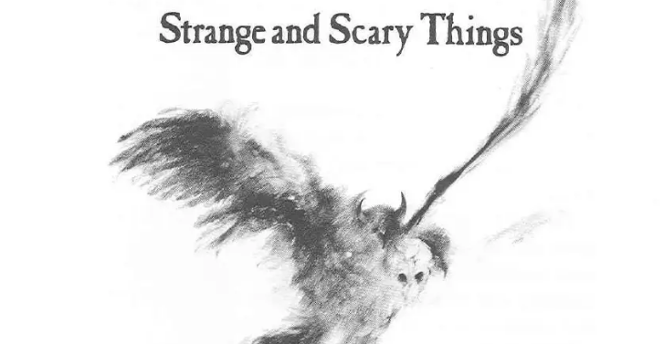

Once Upon a Page
Once Upon a Page

Scary Stories to Tell in the Dark
A collection of creepy folktales and urban legends for campfires.
Tales for the Campfire

Pioneers used to entertain themselves by telling scary stories. At night they might gather in somebody's cabin, or around a fire, and see who could scare the others the most.
Some girls and boys in my town do the same thing today. They get together at somebody's house, and they turn out the lights and eat popcorn, and scare one another half to death.
Telling scary stories is something people have done for thousands of years, for most of us like being scared in that way. Since there isn't any danger, we think it is fun.
There are a great many scary stories to tell. There are ghost stories. There are tales of witches, devils, bogey- men, zombies, and vampires. There are tales of monstrous creatures and of other dangers. There even are stories that make us laugh at all this scariness.
Some of these tales are very old, and they are told around the world. And most have the same origins. They are based on things that people saw or heard or experi- enced or thought they did.
Many years ago a young prince became famous for a scary story he started to tell, but did not finish. His name was Mamillius, and he probably was nine or ten years old. William Shakespeare told about him in The Winter's Tale.
It was on a dark winter's day that his mother, the queen, asked him for a story.
"A sad tale's best for winter," he said. "I have one of sprites and goblins."
"Do your best to frighten me with your sprites," she said. "You're powerful at it."
"I shall tell it softly," he said. "Yond crickets shall not hear it."
And he began, "There was a man dwelt by a church- yard." But that was as far as he got. For at that moment the king came in and arrested the queen and took her away. And soon after that, Mamillius died. No one knows how he would have finished his story. If you started as he did, what would you tell?
Most scary stories are, of course, meant to be told. They are more scary that way. But how you tell them is important.
As Mamillius knew, the best way is to speak softly, so that your listeners lean forward to catch your words, and to speak slowly, so that your voice sounds scary.
And the best time to tell these stories is at night. In the dark and the gloom, it is easy for someone listening to imagine all sorts of strange and scary things.